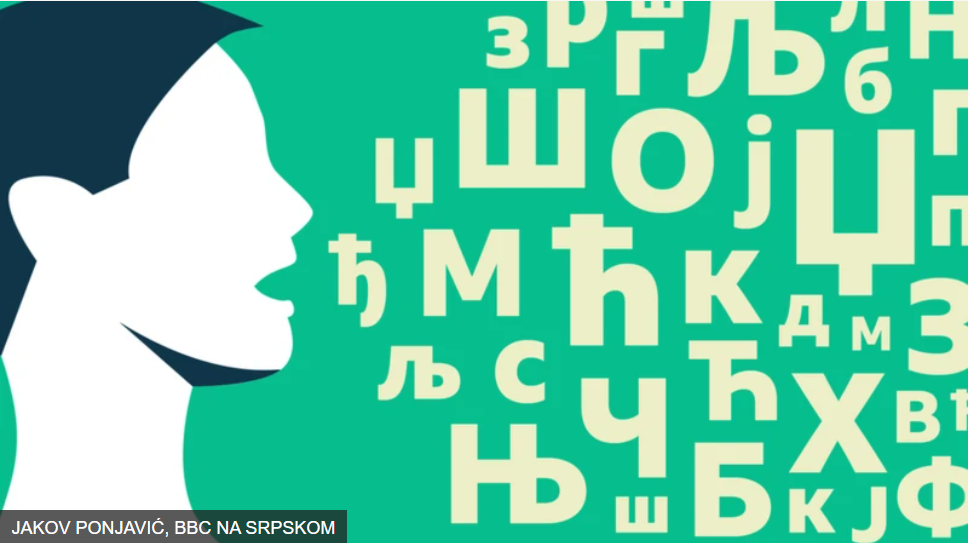
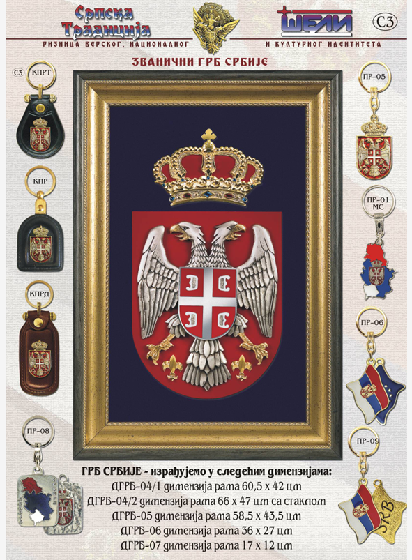

IDENTITET · 3:31
Srbi u Crnoj Gori – rezultati popisa
Informativni prilog o nacionalnom izjašnjavanju stanovništva i savremenom identitetu srpske zajednice u Crnoj Gori.
Izvor: Newsmax Balkans · YouTubeOriginalni snimak ↗
Prostor susreta kulture, istorije, jezika i savremenih digitalnih mogućnosti. Istražite nasljeđe srpske zajednice u Crnoj Gori kroz tekstove, dokumentaciju i virtuelnu izložbu.

Tri video-priloga o srpskoj zajednici u Crnoj Gori, reformi srpskog jezika i očuvanju ćiriličnog pisma.
Informativni prilog o nacionalnom izjašnjavanju stanovništva i savremenom identitetu srpske zajednice u Crnoj Gori.
Istorijski prilog o Vukovoj reformi jezika i njegovom kulturnom nasljeđu.
Prilog o predavanju posvećenom istorijskom i kulturnom značaju ćirilice za srpski nacionalni identitet.
Projekat „Virtuelni identitet Srba“ polazi od shvatanja kulture kao živog sistema vrijednosti, jezika, običaja i kolektivnog pamćenja. Digitalne platforme omogućavaju da ovi sadržaji budu pristupačni različitim generacijama.
Saznaj više o projektu ↗Objavljeno: 01.09.2026.
Od digitalne pismenosti i jezika do kulture sjećanja: sadržaji sistematizovani prema izvornom dokumentu.




Objavljeno: 01.09.2026.